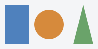

The map element, in conjunction with an img element and any area element descendants, defines
an image map. The element represents its children.
HTML §4.8.12
The map's content is transparent: text and links in it are drawn where the map is. An area is a shape on an
image, not a box; areas are among the elements with display: none. §15.3.1
An img's usemap is a valid hash-name reference to a map element
; the map may be anywhere in
the document. §4.8.14.1
The log lists the target of each click on the page.

target=far-rect, an area of a map at the end of the page.
Click the grey: target=image.